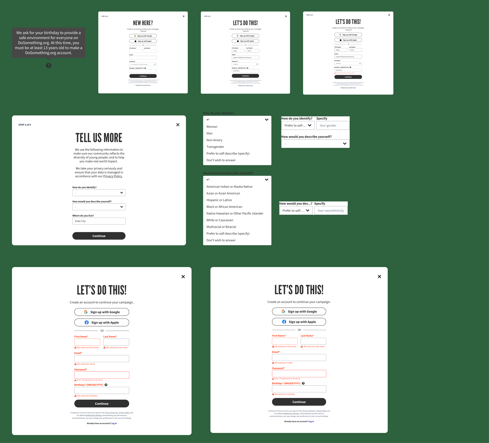
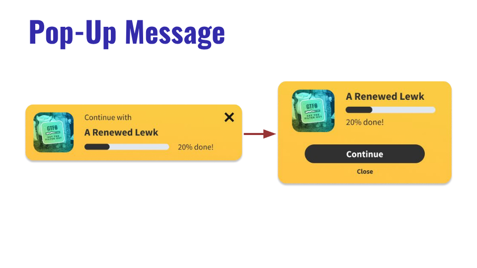
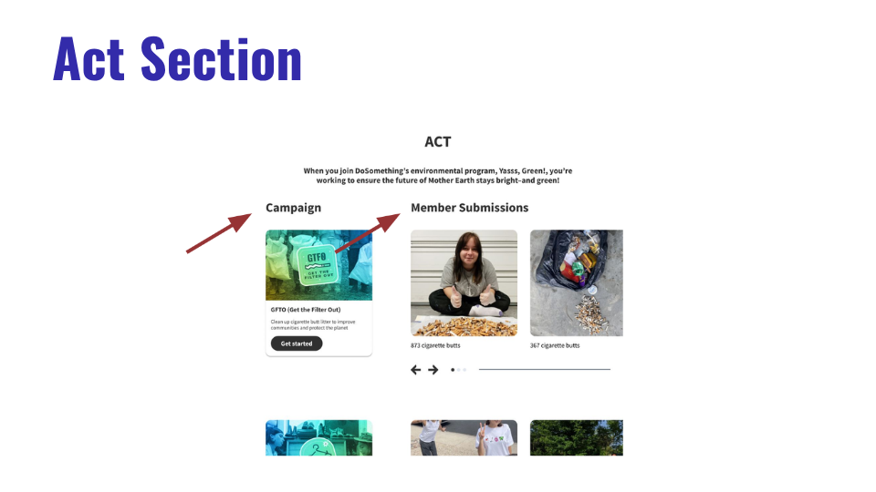

Streamlining the Sign-Up Funnel for 5M+ Young Changemakers
An end-to-end UX research and interaction design project optimizing onboarding, account creation, and user submission flows for DoSomething's flagship sustainability campaign.
Young participants in the "A Renewed Lewk" campaign experienced high drop-off and confusion during sign-in/sign-up and when returning to submit proof.
My Approach
Led generative & evaluative research: 5 deep-dive interviews, think-aloud usability testing, affinity clustering, paper sketching, and Figma interactive prototypes.
Key Impact
Turned dismissible pop-ups into persistent wayfinding steps, integrated Apple SSO, added data privacy transparency, and delivered the final strategy deck to VP leadership.
Confidentiality NoteDue to organization privacy guidelines, some internal analytics and behind-the-scenes engineering assets are summarized. For an in-depth walkthrough of my design artifacts, feel free to reach out directly at ri.craigrica@gmail.com.
As DoSomething.org celebrated 30 years of youth-led activism, the Product and Engineering team set out to modernize the web platform to boost engagement among millions of young changemakers. I joined as a Product & Engineering Intern with full autonomy over the onboarding research and user flow redesign for key national campaigns.
Specifically, I tackled "A Renewed Lewk" (part of the flagship Yasss, Green! initiative), which educates youth on sustainable fashion and guides them to host local clothing swaps.
"How might we redesign the program onboarding and submission flow so that first-time and returning participants complete the clothing swap experience with zero friction?"
Core Success Metrics & Goals
Zero-Friction Activation: Enable first-time visitors to seamlessly register without disrupting their reading flow.
Predictable Wayfinding: Clarify the multi-step journey so users know exactly where they are in the program lifecycle.
Proof Submission Completion: Make returning to the site to submit clothing-swap proof intuitive and dismiss-proof.
02. User Research & Synthesis
To uncover why participants dropped off, I designed and conducted 1-on-1 usability testing sessions with 5 representative target users (ages 18–24), employing think-aloud protocols across realistic task scenarios.
Theme 01 · Account Flow
Sign-Up Expectations
Users expect instant Google / Apple SSO rather than lengthy manual email forms.
Demographic questions felt intrusive without clear context on why data was needed.
Account creation must feel lightweight and integrated into the campaign story.
Theme 02 · Navigation
Disorienting Pop-Ups
Sign-up modal appeared unexpectedly, leading users to believe they clicked an error.
Pop-up message for returning users was easily dismissed, causing lost context.
Lack of numbered steps created ambiguity around progress.
Theme 03 · Campaign IA
Information Structure
Actionable instructions for hosting clothing swaps were buried beneath collateral.
The "Act" section blended informational copy with member submissions, causing visual noise.
Working alongside my design supervisor, I synthesized raw transcript notes into an interactive Figma Affinity Map to cluster user quotes, identify critical bottlenecks, and prioritize high-leverage UI opportunities.
Live Figma Affinity Board: Grouping observations into behavioral clusters and UX recommendations.
03. Target User Persona
From research synthesis emerged our primary archetypal user, representing the mindset, motivations, and pain points of DoSomething's core youth demographic.
Persona Profile
Charlie Johnson, 20
College Sophomore · Passionate about environmental sustainability, thrifting, and grassroots community organizing.
Core Motivations
Wants to take tangible climate action by organizing a campus clothing swap.
Looks for clear, bite-sized guides with minimal bureaucratic friction.
Key Frustrations
Frustrated by unexpected modal takeovers that break browsing flow.
Hesitant to share personal demographic data without explicit privacy assurances.
04. Explorations & Iterative Prototyping
With clear problem definitions, I kicked off rapid paper sketching sessions to explore alternate information architectures, button hierarchies, and modal transitions.
Phase 1: Concept Paper Sketches
I mapped out various layout concepts for the "Let's do this!" sign-in, forgot-password error handling, and inline onboarding steps.
Exploratory sketches: Testing form structures, button emphasis, and password recovery states.
Phase 2: Mid-Fidelity Wireframes
I translated top-performing sketch patterns into responsive Figma mid-fidelity frames, standardizing typography, input states, and transition flows for team evaluation.
Following feedback rounds with engineering and design leadership, I built high-fidelity interactive prototypes incorporating DoSomething's visual design system, brand colors, and accessible contrast standards.

High-Fidelity Components: Polished UI states ready for usability testing and technical handoff.
05. Core Design Proposals & Rationales
Based on our final rounds of think-aloud testing, I packaged three major design recommendations for the production codebase:
01
Re-scoped Pop-Up Message
Wayfinding & Retention

Problem: In the original design, users instinctively clicked the small 'X' on the pop-up modal, losing their position in the campaign flow.
Solution: Redesigned the pop-up as a persistent, structured step with a prominent "Continue" primary CTA and a clear secondary "Close" affordance. This ensures users read crucial next steps before deciding to proceed or return to the cover page.
02
Act Section Information Architecture
IA & Visual Hierarchy

Problem: Participants struggled to distinguish between official campaign directions and community member photo submissions.
Solution: Restructured the section into distinct, labeled subsections — "Campaign Guide" and "Member Submissions" — enabling users to quickly scan instructions and see peer proof submissions at a glance.
1. Dedicated Step Indicator: Positioned sign-up as an explicit "Step 2 of 4" within the flow so users anticipate account creation rather than feeling abruptly intercepted. 2. Apple SSO Integration: Replaced outdated Facebook SSO with Apple and Google authentication based on direct user preferences. 3. Privacy Statement Callout: Embedded reassuring transparency copy explaining that demographic inputs help customize volunteer opportunities, directly addressing user hesitation.
Final Executive Deliverable
Interactive Slide Deck & Research Presentation
Scroll and click through the complete slide deck delivered to DoSomething's Product & Engineering leadership.
Owning this project from problem definition to executive presentation gave me firsthand experience balancing user needs with product velocity and engineering constraints.
Key Takeaway 1: Embrace the Unexpected in Research
The most impactful design insights came from unexpected user reactions — such as participants feeling they made an error when the unannounced sign-up modal popped up. Observing genuine moments of hesitation taught me that user empathy isn't just about making things look good; it's about eliminating cognitive anxiety.
Designing in isolation rarely ships. By collaborating closely with engineering and product management early in the wireframing phase, I ensured that every proposed UI change — from SSO providers to persistent modal routing — was technically feasible and aligned with DoSomething's long-term product roadmap.